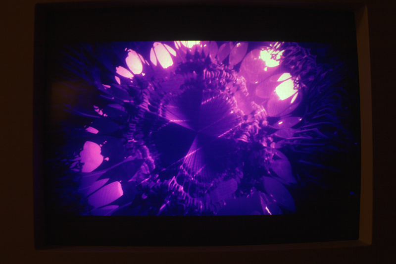

20140828 - HDFury Nano GX: HDMI to VGA
Got my HDFury Nano GX, now have the ability to run my little CRT from the HDMI out of the laptop with the 120Hz screen and a GTX 880M...

The Nano is simply awesome. Can now also run the PS4 on a VGA CRT with this device, way better than the PlasmaHDTV I've been using. When the device needs to decript HDMI signals, it needs the cord for USB power. My little CRT can do 720p60Hz, and the tiny amount of super-sampling from the PS4's downscaler in combination with the CRT scanline bloom, low latency, and low persistance creates an awesome visual.
Running from the GTX 880M with NVIDIA drivers in Linux worked right out of the box at 720p60Hz also on the little CRT. I ran with 720p GPU-downsampled from 1080p to compare apples to apples. Yes 60Hz flickers with a white screen, but with the typically low intensity content I run, I don't really notice the flicker. Comparing the 120Hz LCD and the CRT at 60Hz is quite interesting. The CRT definitely looks better motion wise. The 120Hz LCD has no stobe backlight, so it has 4-8x higher persistence than the CRT at 60Hz. Very fast motion is easy to track visually on the CRT. When the eye tracking fails, it still does not look as bad as the 120Hz LCD. The 120Hz LCD is harder track in fast motion without seeing what looks similar to full-shutter 4-tap motion blur at 30Hz. It is still visually obvious that the frame sits for a bit in time.
In terms of responsiveness, the 120Hz LCD is direct driven by the 880M. GPU LUT reprogram to reading the value on a color calibration sensor loop is just 8 ms. My test application also minimizes latency of input by reading controller input directly from CPU memory right before view dependent rendering. Even with that, the 120Hz definitely feels more responsive. The 8ms difference between CRT at 60Hz and LCD at 120Hz seems to make an important difference.
Thoughts on Motion Blur
Motion blur on the CRT at 60Hz in my mind is completely not necessary. Motion blur on the 120Hz LCD (or even 60Hz LCD) is something I would not waste perf on any more. However it does seem as if the entire point of motion blur for "scan-and-hold" displays like LCDs is to simply reduce the confusion that the human visual system is subjected to. Specifically just to break the hard edges of objects in motion, as to reduce the blur confusion the mind is getting from the full persistance "hold". Seems like if motion blur is used at 60Hz and above on an LCD, it is much better to just limit it to a very short size with no banding.
Nano and NVIDIA Drivers in X
Had to manually adjust the xorg conf to get anything outside 720p60Hz to work. I disabled the driver from using the EDID data, went back to classic horz and vert ranges. Noticed a bunch of issues with the NVIDIA Drivers and/or hardware,
(a.) Down-sampling at scan-out has some limits, for example going from 1920x1080 to 640x480 won't work. However scaling only height or width with virtual panning in the unscaled direction does work. This implies that either the driver has a bug, or more likely that the hardware does not have enough on-chip line buffer for the scalar to do such high reductions.
(b.) Up-sampling at scan-out from NVIDIA GPUs is completely useless because they all introduce ringing (hopefully some day the will fix that, I haven't tried Maxwell GPUs yet).
(c.) Metamodes won't do under 31KHz horizontal frequency modes. Instead it forces the dead ugly "doublescan".
(d.) Skipping metamodes and fall back to modelines has a bug where small resolutions automatically extend out the virtual panning resolution in width only, but have broken panning. I still have not found a workaround for this. The modelines even under 31KHz seem to work however (must use "ModeValidation" options to turn off the safety checks).
The Nano does work with frequencies outside 60Hz: managed to get 85Hz going at 640x480. Seems as if the Nano also supports low resolutions and arcade horizontal frequencies (a modeline with 320x240 around 60Hz worked). Unfortunately I'm somewhat limited in testing by the limits of the CRT. It also seemed as if I could get the 880M to actually use an arcade horizontal frequency. But I don't have a way to validate this yet. Won't be sure until I eventually grab another converter (VGA to Component supporting 240p) and try driving a NTSC TV with 240p like old consoles did.